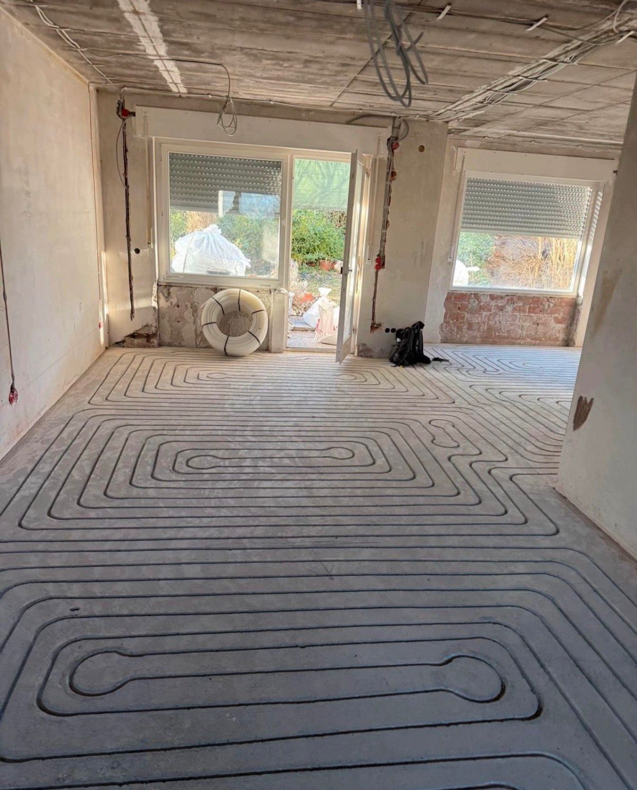
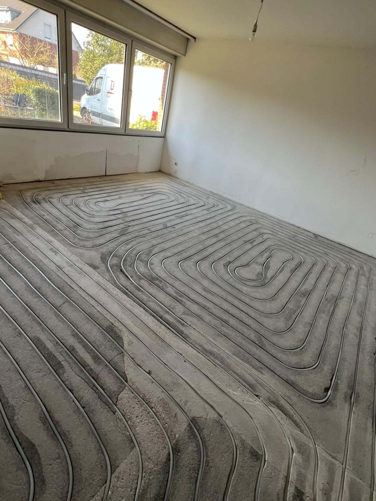
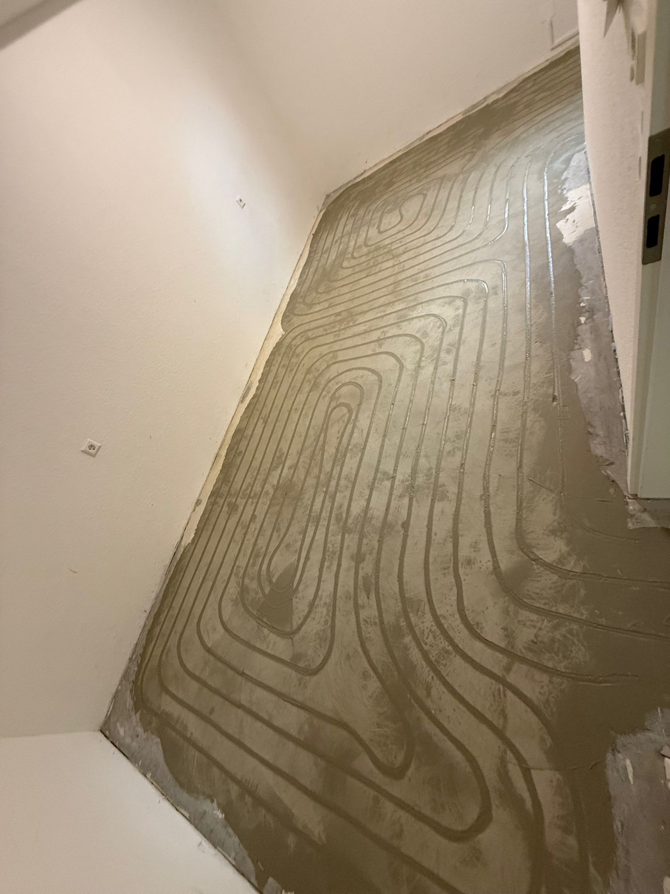
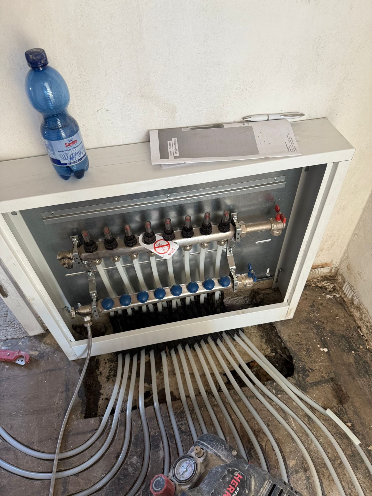

Wir fräsen, verlegen und verspachteln — der komplette Einbau Ihrer Fußbodenheizung in der Regel an einem einzigen Tag.
Bei vielen Anbietern sind Fräsen, Verlegen, Verspachteln und Anschließen vier separate Aufträge — vier Termine, vier Rechnungen, vier Mal koordinieren. Bei uns ist das ein einziger Auftrag. Ein Termin, ein Preis, und in der Regel sind wir vor dem Abend fertig.

Wir schneiden präzise Kanäle in Ihren bestehenden Estrich — direkt in das, was schon da ist. Unsere Maschinen saugen den Staub während des Fräsens ab. Die meisten Kunden sind überrascht, wie wenig Dreck bleibt.
Das Verfahren funktioniert bei Zementestrich, Anhydritestrich und Gussasphalt. Der Boden bleibt danach auf dem gleichen Niveau — kein Abriss, keine Aufbauhöhe, keine Türen die nicht mehr passen.

Direkt nach dem Fräsen kommen die Rohre rein. Rohrabstand und Linienführung entscheiden darüber, wie gleichmäßig der Boden warm wird — das ist keine Arbeit die man einfach so macht.
Wir schließen die Rohre an Ihren vorhandenen Heizkreisverteiler an und prüfen den Druck bevor wir verspachteln. Keine schlechten Überraschungen nach dem Einbau.

Alle Kanäle werden sauber verschlossen. Der Boden ist danach eben, belastbar und sofort begehbar — für jeden Bodenbelag oder den nächsten Handwerker.
Wenn wir die Baustelle verlassen, ist sie so aufgeräumt wie wir sie vorgefunden haben. Das ist für uns selbstverständlich.

Alle Heizkreise werden am Verteiler angeschlossen, entlüftet und auf Druck geprüft. Danach läuft das System — Sie müssen nichts weiter koordinieren.
Am Ende zeigen wir Ihnen kurz, wie der Verteiler funktioniert und worauf Sie beim ersten Aufheizen achten sollten. Fertig. Warm. Erledigt.
Das Fräsverfahren verändert das Bodenniveau nicht — keine Türanpassungen, keine Stufen.
Die meisten Projekte schließen wir an einem einzigen Arbeitstag ab — minimale Ausfallzeit für Sie.
Nach dem Vor-Ort-Termin erhalten Sie ein verbindliches Angebot — der Preis, den wir nennen, ist der Preis, den Sie zahlen.
Zementestrich, Anhydrit, Gussasphalt — wir fräsen in nahezu alle gängigen Unterbodenarten.